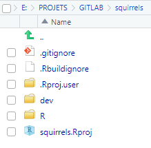
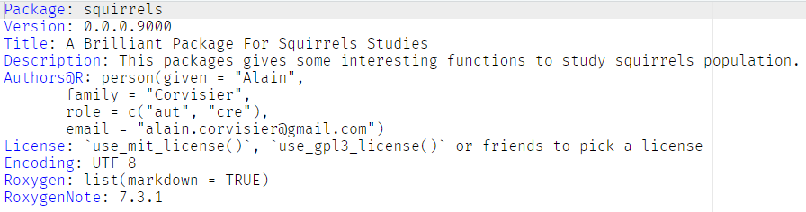
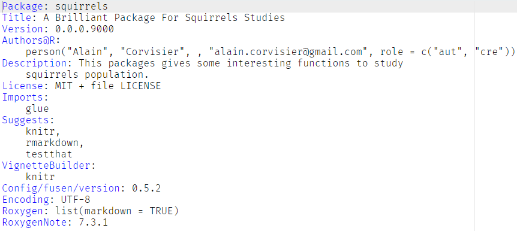
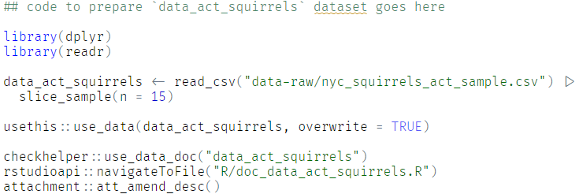

fusen::create_fusen(path = "../GITLAB/squirrels", template = "minimal", flat_name = "first")Annexe B — Mémo Commandes utilisées pour la création de packages
B.1 Création de la structure du package
La structure créée est la suivante :

Dans le répertoire principale du projet :
-
le fichier
.gitignoreignore- le dossier
.Rproj.user - le fichier
.Rhistory - les fichiers
.RData,.DS_Storeet.httr-oauth
- le dossier
le fichier
.Rbuildignoreignore tout ce qui se trouve dans le dossierdev(^dev$)-
Le répertoire
devcontient :un fichier
.gitignoreignorant les fichiers*.htmlet*.R-
2 fichiers Rmarkdown
-
0-dev_history.Rmdcontenant les données générales ainsi qu’un ensemble de commandes -
flat_first.Rmdcontenant les définitions de fonctions ainsi que les exemples et les tests unitaires
-
le dossier R est un dossier réceptacle des futures fonctions
B.2 Création du fichier DESCRIPTION
# Describe your package
fusen::fill_description(
pkg = here::here(),
fields = list(
Title = "Build A Package From Rmarkdown File",
Description = "Use Rmarkdown First method to build your package. Start your package with documentation. Everything can be set from a Rmarkdown file in your project.",
`Authors@R` = c(
person("John", "Doe", email = "john@email.me", role = c("aut", "cre"), comment = c(ORCID = "0000-0000-0000-0000"))
)
)
)Voici le fichier DESCRIPTION généré après avoir alimenté les sections Title, Description et (Authors?)(R?) et lancé la commande fill_description :

B.3 Création de la licence
# Define License with use_*_license()
usethis::use_mit_license("John Doe")Après saisie de l’argument et validation, la commande use_mi_license alimente la section License du fichier DESCRIPTION et génère deux fichiers :
- LICENSE
- LICENSE.md
B.4 Vérification de la présence de Rtools (sous Windows)
#|
pkgbuild::has_rtools()[1] TRUEB.5 Inflat des 3 chunks associés à la fonction
B.5.1 Etape de développement dans la section development
Ce chunk dédié qui ne sert qu’à l’étape de réflexion sur le contenu de la fonction. Son contenu ne sera jamais intégré dans le fichier généré par l’exécution de la commande inflat.
On définit ici :
- l’objectif de la fonction
- les paramètres de la fonction
- la valeur de retour de la fonction
B.5.2 Suppression des 3 chunks initiaux
il est nécessaire de supprimer les 3 chunks function-first, examples-first et tests-first.
B.5.3 Intégration des nouveaux chunks
De nouveaux chunks sont insérés dans le fichier flat avec l’addin RStudio > {fusen} > Add {fusen} > chunks pour accueillir la fonction get_message_fur_color
B.5.4 Alimentation du chunk function-get_message_fur_color
La définition de la fonction, se basant sur les étapes de développement préliminaires, est saisie dans le chunk
function-get_message_fur_color-
La fonction peut ensuite être documentée
On positionne le curseur dans le corps de la fonction puis on appelle la commande Code > Insert Roxygen Skeleton
Il faut ensuite saisir le titre de la fonction (sans point final) et sa description (avec un point final).
On vérifie que les sections
@paramet@returnsont correctement complétées.On oublie pas d’insérer la clause “
@imporFromglue glue” pour inclure la dépendance de la fonction dans sa documentation.
B.5.5 Complétion du chunk examples-get_message_fur_color
Saisie de quelques examples d’utilisation dans cette section
B.5.6 Ecriture d’un(de) test(s) unitaire(s)
Quelques tests unitaires sont insérés dans le chunk dédié tests-get_message_fur_color
B.5.7 Gonflage du package
fusen::inflate(flat_file = "dev/flat_study_squirrels.Rmd", vignette_name = "Study the squirrels")
Note
Il est possible de vider l’environnement avant d’exécuter la commande inflate pour éviter les conflits
Attention
Le nom du fichier flat passé en argument est dev/flat_study_squirrels.Rmd. Nous devons donc renommer le fichier dev/flat_first.Rmd en ce sens.
L’exécution de la commande inflate produit :
la création de l’onglet
buildune mise à jour de du fichier DESCRIPTION avec les dépendances

l’inclusion du fichier get_message_fur_color.R dans le dossier
Rcréation du dossier
manavec un fichier get_message_fur_color.Rd (documentation LateX)création du fichier NAMESPACE à la racine
création du dossier
tests/testhatavec insertion des tests unitairescréation du dossier
vignetteset ajout de la vignette Rmarkdown
Note
Par défaut, la commande inflate lance 2 commandes :
-
attachment::att_amend_desc(), qui génère la documentation -
devtools::check(), qui permet de vérifier que le package suit les règles
B.6 Installation du packages
Depuis l’onglet build > Install
B.7 Vérification de l’aide sur la fonction du package
?get_message_fur_colorB.8 Construction du tar.gz
devtools::build(vignettes = TRUE)B.9 Installation du tar.gz
remotes::install_local(path = "squirrels_0.0.0.9000.tar.gz", build_vignettes = TRUE)B.10 Création d’un site web dédié à la présentation du package
usethis::use_pkgdown()
pkgdown::build_site(override = list(destination = "inst/site"))B.11 Ajout d’un README
usethis::use_readme()
devtools::build_readme() # to get README.mdB.12 Ajout d’un code de conduite (COC)
usethis::use_code_of_conduct("contact@fake.com")B.13 Ajout d’un fichier de suivi des modifications de versions
usethis::use_news_md()
usethis::use_version() # pour monter en versionB.14 Réaliser un test de code coverage en local
- quel pourcentage est couvert ?
covr::package_coverage()- quel pourcentage ne l’est pas ?
my_coverage <- covr::package_coverage()
covr::zero_coverage(my_coverage)- rapport de couverture
covr::report()B.15 Insertion de données
B.15.1 dans data-raw
Ces données sont à destination des développeurs
# crée un répertoire data-raw avec un fichier data_act_squirrels.R
usethis::use_data_raw(name = "data_act_squirrels") A l’intérieur de ce fichier les instructions sont données pour construire un fichier .rda dans le répertoire data et accessible à l’utilisateur par l’instruction data(nom_du_dataset)

-
usethis::use_data(nom_du_dataset)enregistre l’objet passé en paramétre au format .rda dans le dossierdata -
checkhelper::use_data_doc("nom_du_dataset")crée le fichier doc_nom_du_dataset.R dans le dossierR -
rstudioapi::navigateToFile("R/doc_nom_du_dataset.R")se déplace à l’intérieur de ce fichier pour insertion des informations de documentation manquantes.
B.15.2 dans inst
Les données insérées ici sont des données brutes à disposition des utilisateurs.
B.16 Fonctions diverses à connaître :
B.16.1 Ignorer des fichiers ou dossiers pour le build
usethis::use_build_ignore("dev/")B.16.2 Inclure sa définition de fonction dans le dossier R
usethis::use_r("ma_fonction")B.16.3 Effectuer les tests unitaires
usethis::use_testthat()
usethis::use_test("ma_fonction")la fonction test_that :
- crée un dossier **/tests/that
- ajoute {testthat} dans le
suggestsde DESCRIPTION - crée un fichier /tests/testthat.R (à ne pas modifier)
B.16.4 Créer une vignette
usethis::use_vignette("Le titre de ma vignette")